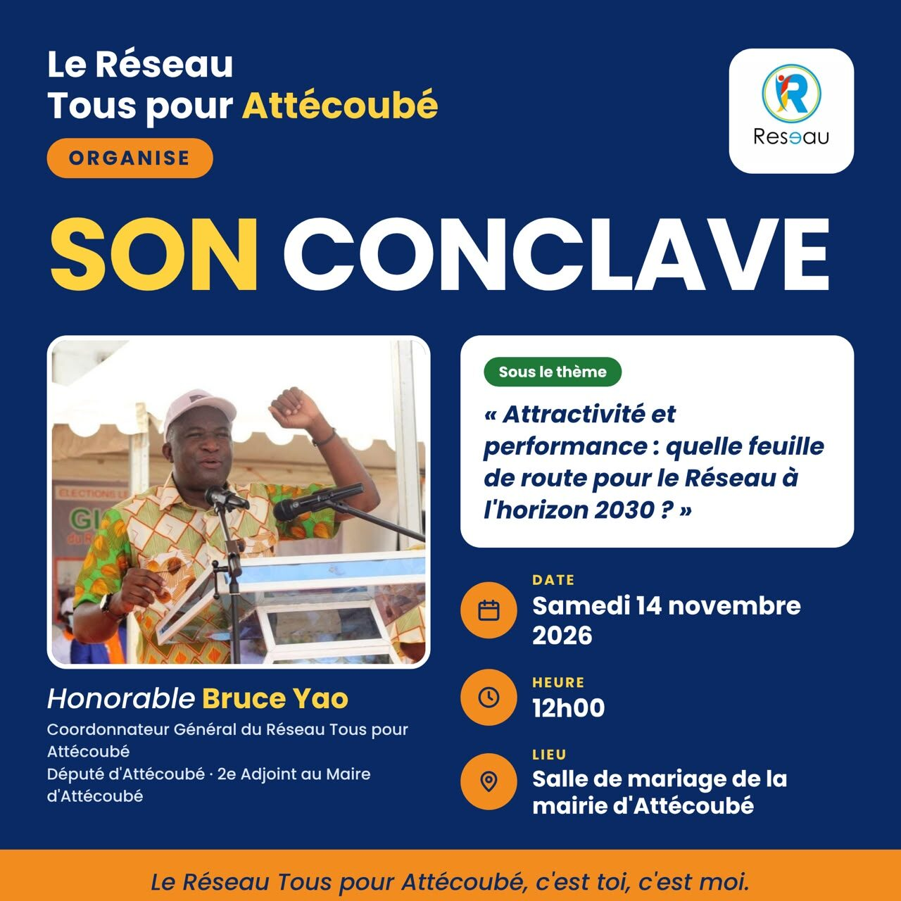
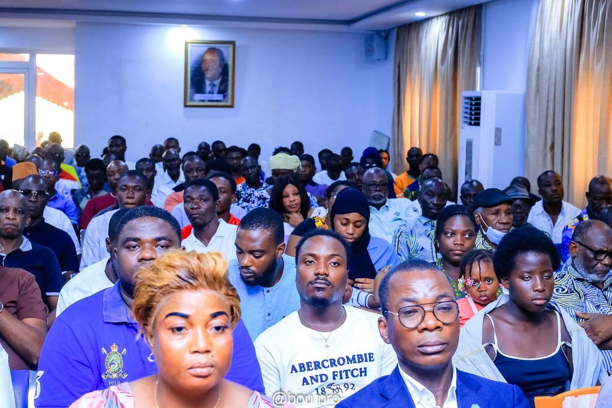
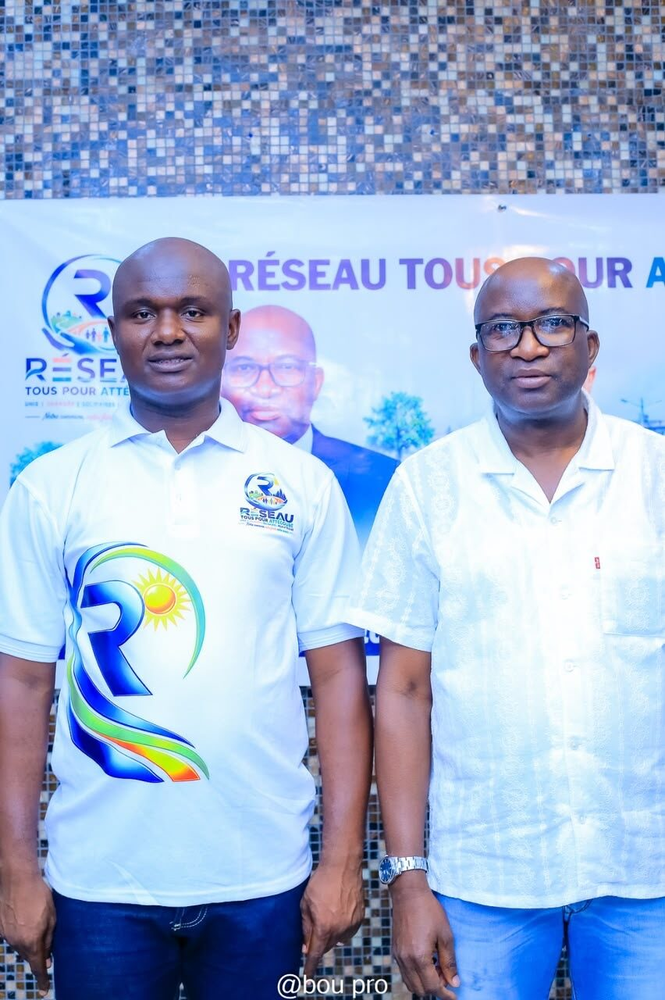
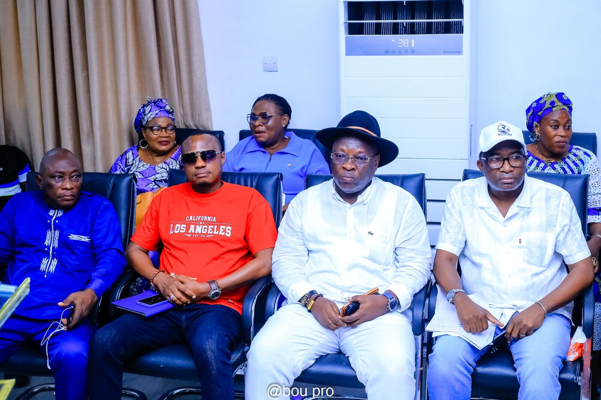
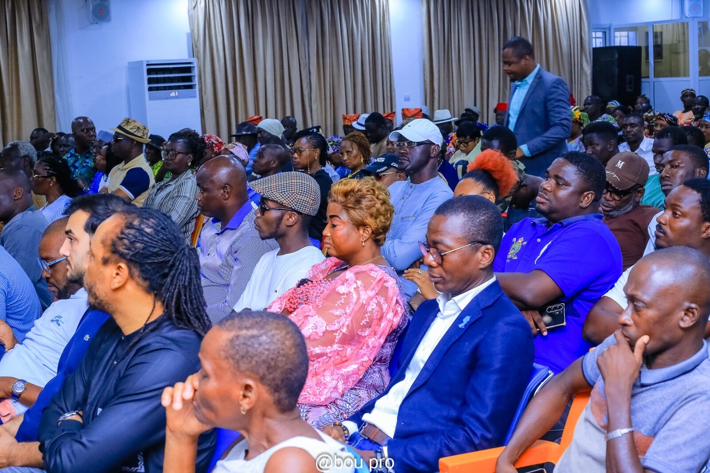
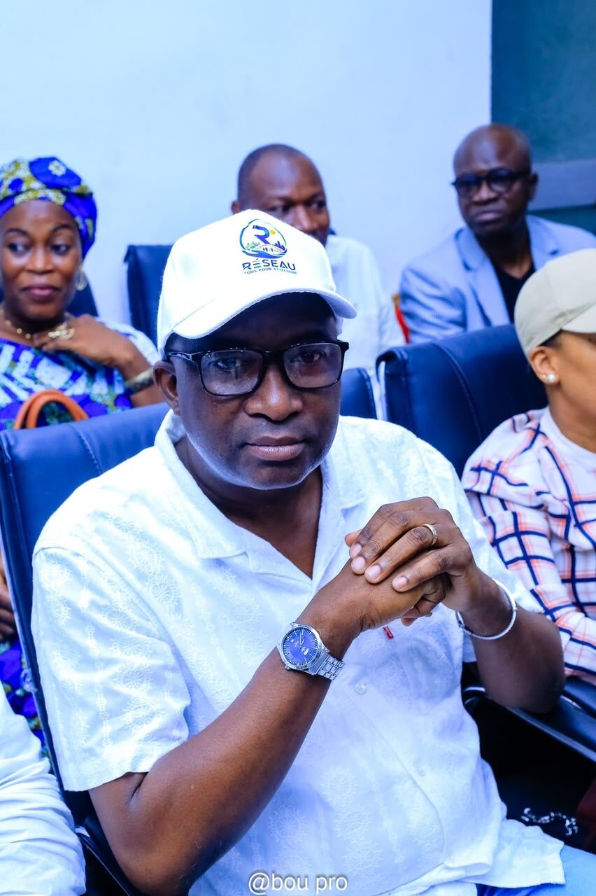
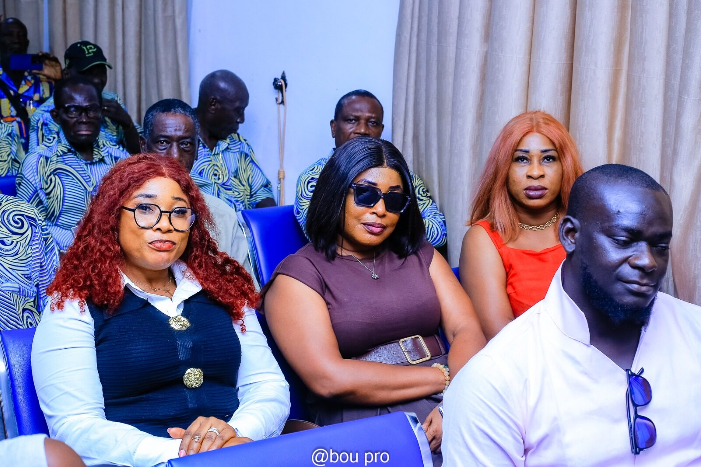
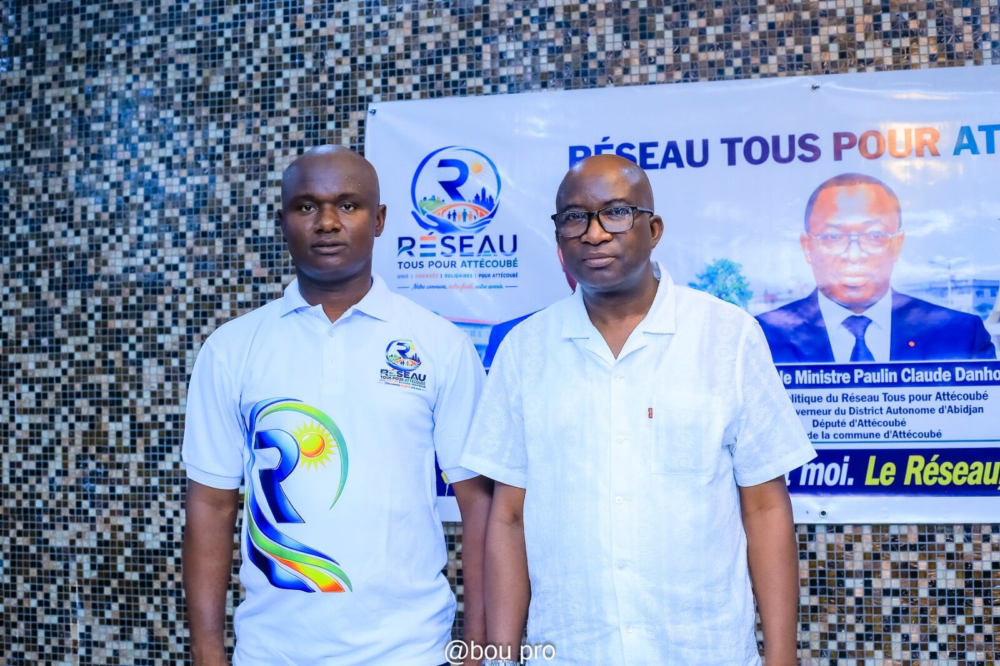
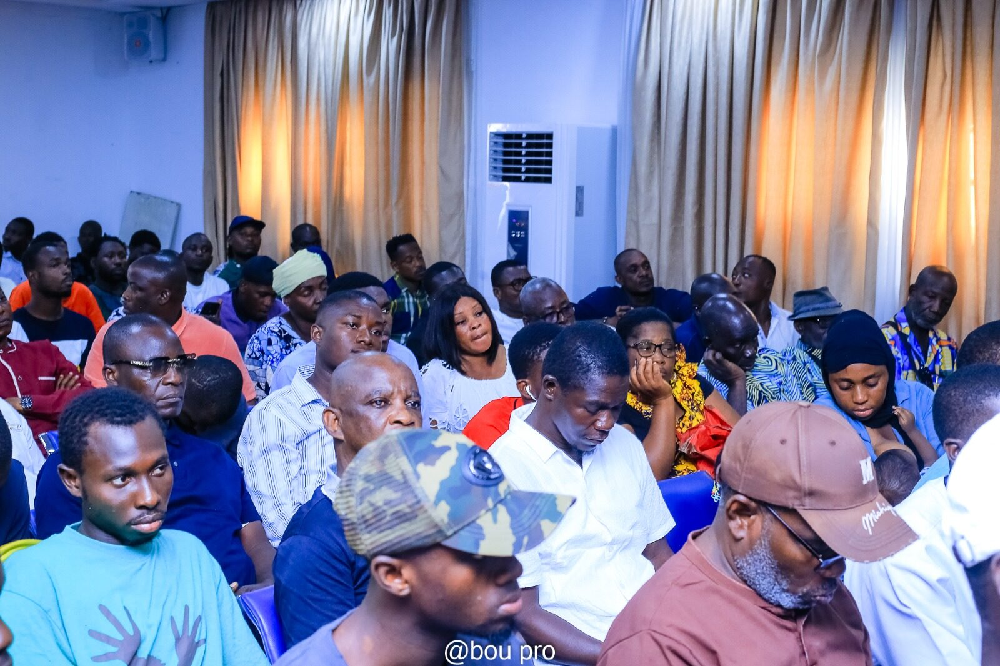
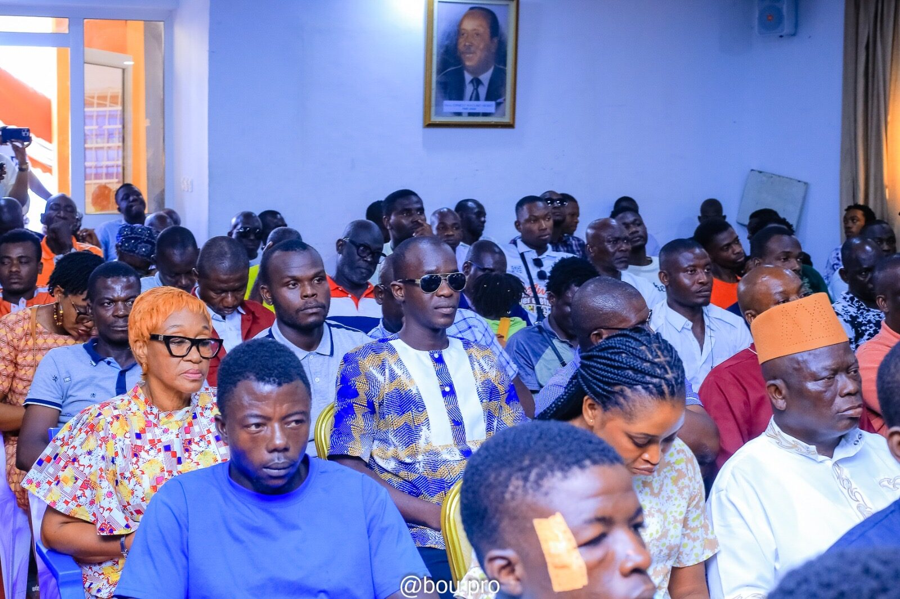

Présidentielle · 31 oct. 2020
94,27 %
pour Alassane Ouattara au plan national ; participation de 53,90 %.
Unis · Engagés · Solidaires · Pour Attécoubé
Notre commune, notre fierté, notre avenir. Depuis 2019, un mouvement citoyen au service des femmes, des jeunes et des familles d'Attécoubé.
Le Réseau Tous pour Attécoubé, c'est toi, c'est moi.
Qui sommes-nous
Créé en 2019, le Réseau Tous pour Attécoubé est un mouvement de soutien au Ministre Paulin Claude Danho, son référent politique. Coordonné par l'Honorable Bruce Yao, il est implanté sur les deux rives de la commune, du quartier jusqu'au bureau de vote.
Sa base est d'abord féminine et jeune : 74 % des membres électeurs sont des femmes et 52 % des enrôlés ont 35 ans ou moins.
Bilan politique 2019 – 2025
94,27 %
pour Alassane Ouattara au plan national ; participation de 53,90 %.
80,28 %
pour le RHDP à Attécoubé 1 et 55,80 % à Attécoubé 2. DPC élu député.
73,94 %
soit 19 536 voix pour la liste Danho. Réélu maire par 59 conseillers sur 60.
89,77 %
pour Alassane Ouattara au plan national, avec une participation proche de 50 %.
Élu
Liste RHDP Danho – Coulibaly victorieuse à Attécoubé ; 197 sièges sur 255 pour le RHDP.
77,5 %
d'abstention aux législatives 2021 : 76 698 inscrits sur 98 929 n'ont pas voté.
Causes relevées : partage inéquitable des dons, promesses non tenues, déplacements de populations, insécurité le jour du vote.
Événement · Samedi 14 novembre 2026

« Attractivité et performance : quelle feuille de route pour le Réseau à l'horizon 2030 ? »
Militants, leaders de femmes et de jeunes, cadres, chefs traditionnels et invités ont rempli la salle pour faire le bilan de six années d'action et tracer la feuille de route du Réseau jusqu'en 2030.









Photos : @bou pro
2030
Passer d'un mouvement citoyen engagé à une institution locale crédible et autonome.
Consolider nos bases et élargir notre assise territoriale : ancrage fort dans chaque quartier.
Devenir un incubateur de leaders référencés en Côte d'Ivoire.
Ressources propres et projets durables.
« Unis et solidaires pour une Attécoubé toujours plus forte ! » M. Narcisse Bouo, Conseiller municipal · Vice-Coordonnateur du Réseau
Documents


Bilan social
Aux côtés des jeunes, des femmes et des familles
1 Sport et loisirs
2 Éducation
3 Insertion des jeunes
Femmes : un accompagnement de proximité
74 %
des membres électeurs du Réseau sont des femmes : elles sont le premier relais du Réseau dans les quartiers.
Une assistance quotidienne auprès des familles
Huit mois de réforme, cinq résultats
Un travail de terrain et de réforme dans le silence, loin des bruits et du folklore.